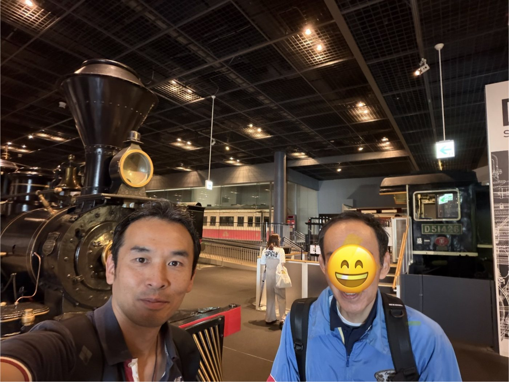
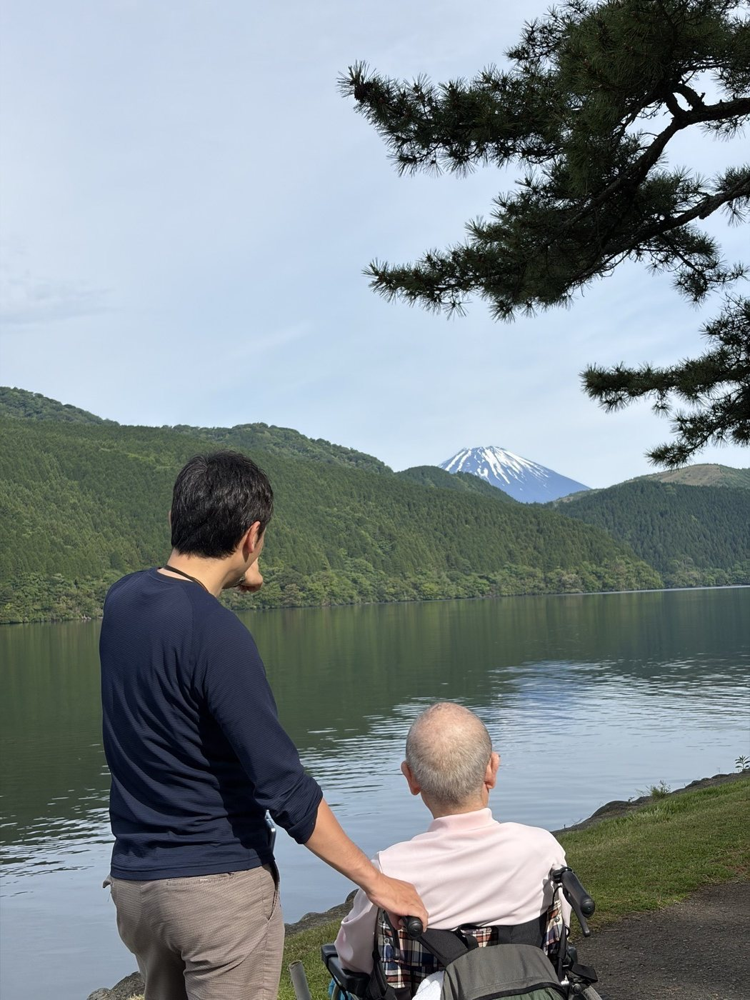
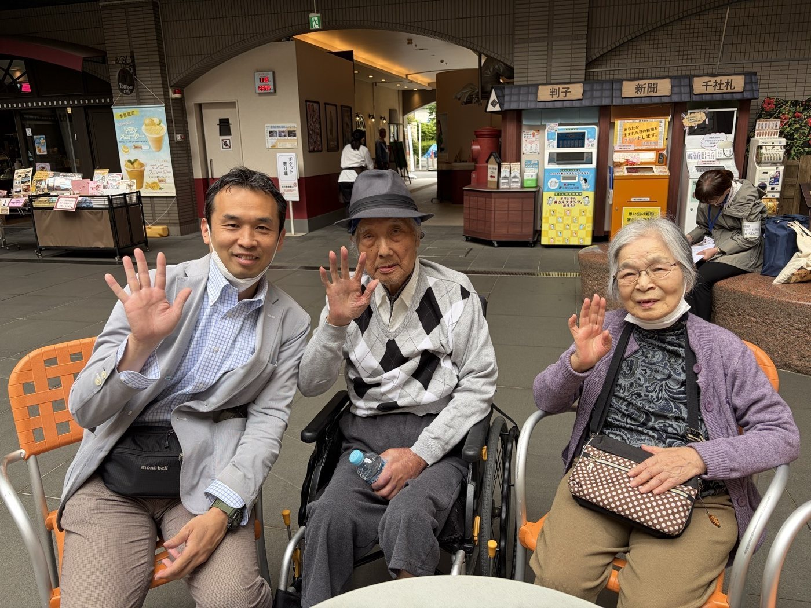
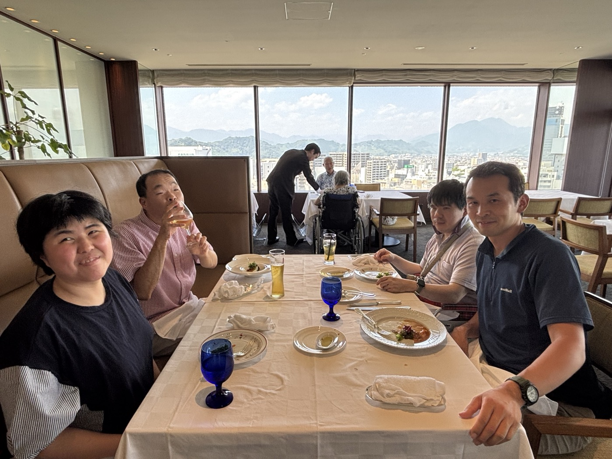
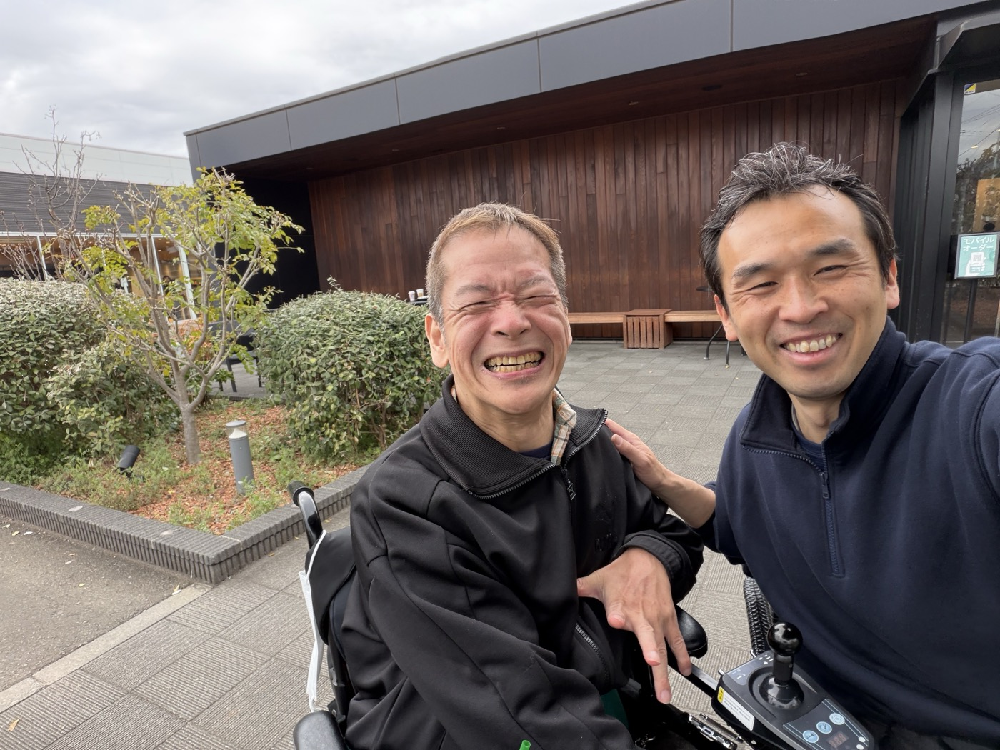
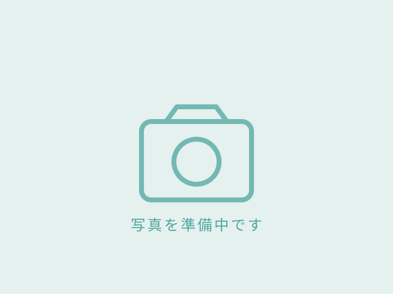

大好きな鉄道を、一日かけて
NPO法人様からのご依頼で、障害のある57歳の男性と一日ご一緒しました。グループホームへお迎えにあがり、大宮シャトルで博物館へ。ご本人のペースに合わせて展示を巡り、おやつのアップルパイまで。
埼玉県さいたま市 鉄道博物館（大宮）
介護離職を、起こさせない社会へ。
介護保険だけでは届かない時間や場面にも、柔軟に対応できる。
働く人にも、支える人にも、心に余裕を持てるサポートを。
ABOUT
介護のために仕事をあきらめる。そんな選択を、誰にもさせたくない。
介護を理由に仕事を諦めずに済む環境、頼れるサービスが身近にある地域、そして介護職が誇りをもって働ける社会。そうした未来の実現に向けて、一人の介護士として挑戦しています。
介護は「家庭の中だけで抱えるもの」ではなく、「地域みんなで支えるもの」。制度の谷間に落ちた人をすくい上げ、地域全体で「支え合える社会」の土台を築いていきたいと考えています。
介護保険では提供できないサービスを安心してご利用いただけます。
介護保険では対応できない日常の困りごとがあるとき、柔軟にお手伝いします。
ヘルパーを利用できる時間帯や回数に制限があるときも、保険外だから対応できます。
ご本人やご家族の希望に柔軟に応えたいとき、オーダーメイドの支援をご提案します。
入退院時や急なトラブルへの対応が必要なときも、まずはご相談ください。
WORKS
実際にご依頼をいただき、ご一緒させていただいた外出・旅行の記録です。
ご本人様・ご家族様の許可をいただいたうえで掲載しています。

NPO法人様からのご依頼で、障害のある57歳の男性と一日ご一緒しました。グループホームへお迎えにあがり、大宮シャトルで博物館へ。ご本人のペースに合わせて展示を巡り、おやつのアップルパイまで。
埼玉県さいたま市 鉄道博物館（大宮）

92歳のご利用者様と、娘様ご夫婦に同行しました。芦ノ湖から富士山が見えた瞬間、ぱっと表情が明るくなって。2日目の海賊船では、車椅子からすっと立ち上がり、ご自分の目で富士山を見つめられました。
神奈川県 箱根町（東京駅 → 小田原 → 芦ノ湖）

娘様からのご依頼で、離れて暮らすお父様とお母様を、ご一緒にお連れしました。車椅子での参道歩き、あじさいの咲く境内。「来られてよかった」——その一言が、すべてでした。
東京都葛飾区 柴又帝釈天・寅さん記念館
VOICE
旅の終わりに、ご本人様・ご家族様からいただいた言葉です。
許可をいただいたものだけを、そのまま載せています。
あなたに頼んで
本当によかった
旅行なんて、
もうできないと思ってた
来てよかった。
次回はもう少し距離をのばせそう
声で景色が
見えた気がした
SERVICE

有資格者の介護スタッフが同行し、移動や宿泊をサポート。車いす対応の宿泊施設や観光地のご提案から旅行計画まで、ご家族様も一緒に楽しめる旅をお手伝いします。視覚障害や肢体不自由のある方の「旅をしたい」という夢も、ユニバーサルツーリズムの専門的な知見でサポート。画一的なパッケージツアーではなく、お客様のご希望や身体状況に合わせたオーダーメイドの旅をご提案します。

訪問介護ヘルパーがご自宅を訪問し、日常生活をサポートします。食事介助・排泄介助などの介護サービス、杖歩行・車椅子介助などの移動サービス、料理・洗濯などの家事サービスに対応。買い物の代行、外出の付き添い、お話し相手、ペットの世話、認知症の方の見守りなども組み合わせられます。初回訪問時にご本人様・ご家族様のご希望を丁寧にお伺いし、適切な支援をご提案します。

ご自宅と病院の往復、時間のよめない診察、受診時のお医者さんから伺ったお話など、ご一緒させていただきご様子をお伝えします。外来受診時の同行、院内での移動介助、診察の立ち会い、医師や看護師からの説明の記録、薬の受け取りにも対応。入院時・入院中・一時退院時の身のまわりのお世話も、ご家族に代わってお手伝いします。
「お子様やお孫様の結婚式に出席したい」──体調や移動への不安から、大切な一日をあきらめかけていませんか。ご自宅から式場までの移動、会場内での車いす介助やお手洗いの介助、披露宴中のさりげない見守り・体調確認、お食事のサポートまで、介護のプロが晴れの日にまごころを込めて付き添います。ご本人様にもご家族様にも、安心して式に集中していただけます。前撮りやご親族としての参列にも対応します。
FLOW
お問い合わせフォームよりご連絡ください。お電話でのご相談も承ります。
サービス内容をご確認いただき、ご契約・ご利用日のご予約をしていただきます。
ご訪問・外出などサービスをご利用いただきます。
現金・クレジットカード・銀行振込のいずれかにてお願いします。
PRICE
かいごのスキマでは、ホームページに一律の料金表を掲げておりません。
お身体の状況も、行き先も、ご一緒する時間も、お一人おひとり違うからです。
ご希望とお身体の状況をうかがったうえで、必要な人数・時間・移動の方法を組み立て、お見積もりをお出しします。決まったパッケージに当てはめることはいたしません。
「こんなこと頼めるだろうか」という段階で構いません。行き先が決まっていなくても、ご相談だけで終わっても、費用はいただきません。
現金や通帳をお預かりする業務は承っておりません。旅費や入場料などの実費は、原則ご本人様・ご家族様にお支払いいただきます。
内訳のわかる形でお出しし、ご家族にも同じものをお渡しします。あとから追加の費用が出る可能性がある場合は、先にお伝えします。
ご相談・お見積もりのご依頼は、お電話またはお問い合わせフォームから承っております。
AREA
川崎市・横浜市・東京都内
※近隣エリアも対応可能な場合があります。お気軽にご相談ください。
事業所所在地：川崎市 ※ヘルパーは都内もしくは都内近郊から伺います
MESSAGE
Q&A
Aはい。介護認定を受けていない方や年齢に関わらずご利用できます。
A現金払い、クレジットカード払い、銀行振込で対応させていただいております。
Aはい。キャンセルする場合は必ずご連絡をお願いいたします。
当日キャンセル 100％
前日17時以降キャンセル 50％
Aはい。ヘルパーが手配できる場合、承ります。
・ご利用希望日時の24時間前 料金の60％増し
・ご利用希望日時の48時間前 料金の30％増し
Aはい。他の資格を有するもの（医療行為や理容行為など）、専門的な知識を要するものはできかねます。
CONTACT
当ホームページをご覧いただき、ありがとうございます。
お問い合わせの方は、下記のフォームに必要事項をご入力いただき、送信してください。
内容を確認のうえ、2日以内に逢坂よりご連絡いたします。
必須 は入力必須です
送信いたしました。ありがとうございます。
ご入力いただいたメールアドレス宛に、受付の控えをお送りしました。
内容を確認のうえ、2日以内に逢坂よりご連絡いたします。
お急ぎの場合は、お電話でもご相談いただけます。
介護保険では届かない「ちょっと助けて」に、まごころでお応えします。